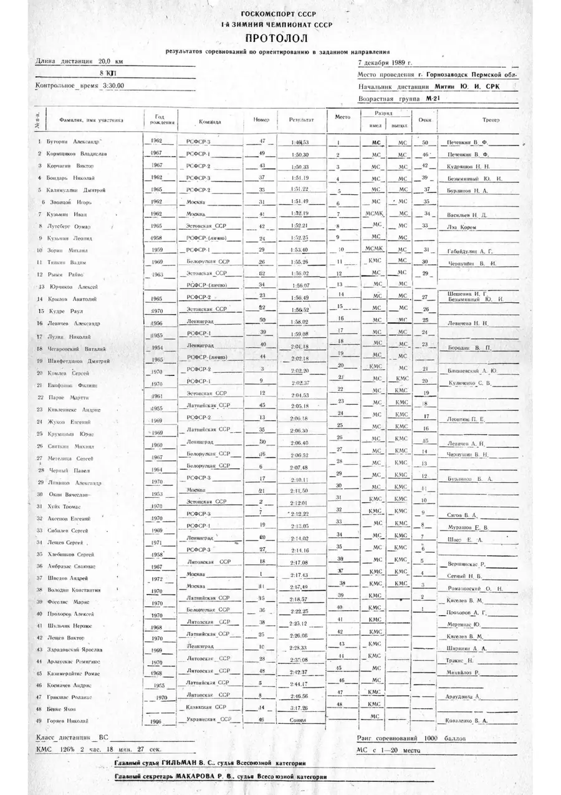
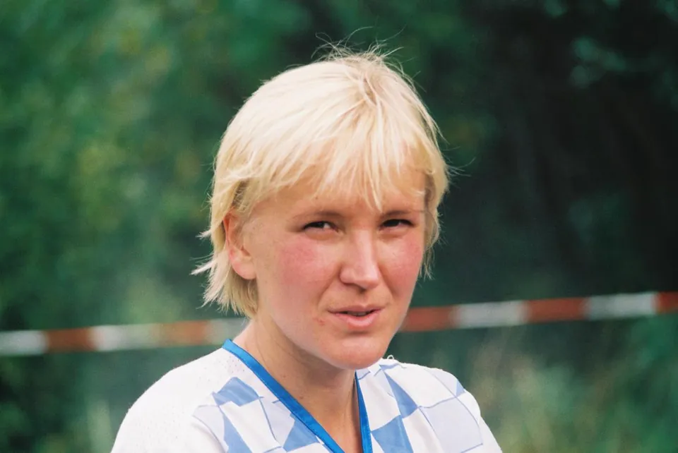
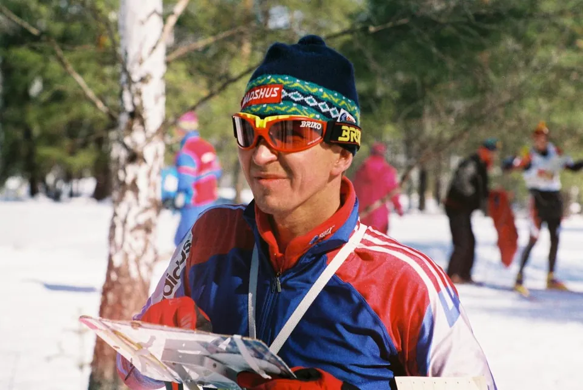
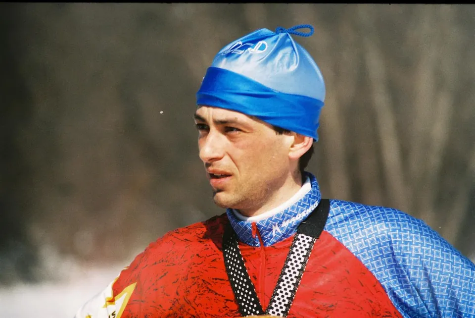
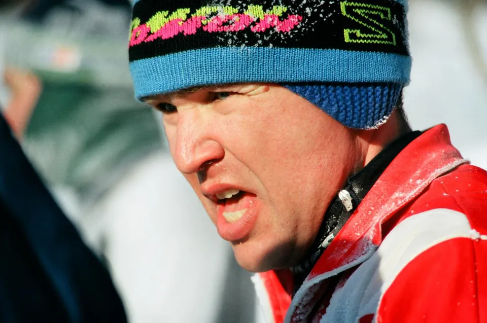
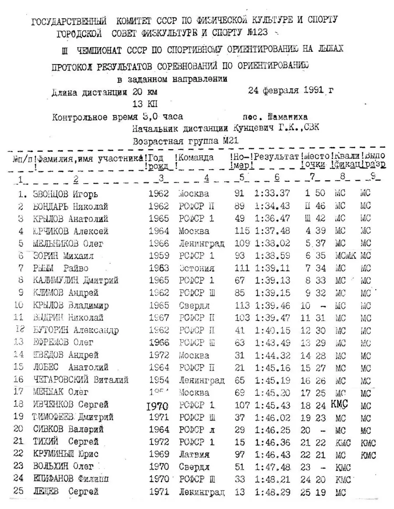

Чемпионат СССР по ориентированию на лыжах
От ночного маршрута до лыжной спортивной карты
У зимнего ориентирования более длинная история, чем у самого чемпионата СССР. Ещё 12 января 1941 года под Кавголовом В. В. Добкович провёл лыжные командные соревнования по закрытому маршруту — предшественнику современного ориентирования. 10 марта 1960 года в Орехове прошло первое зимнее первенство Ленинграда — и первые соревнования на маркированной трассе, а в 1968-м Калуга приняла первые официальные всесоюзные зимние соревнования. Первыми победителями стали Зоя Пятакова (Ленинград) и Станислав Елаховский (Москва). Все эти события предшествовали введению союзного чемпионатного титула.
В 1981 году Свердловск принял первый Кубок СССР по зимнему ориентированию, после которого кубковая система продолжалась до 1988 года: восьмой и последний Кубок прошёл в феврале 1988-го в Выру (Эстонская ССР). Переход к чемпионатам в 1989 году означал, что накопленная годами практика получила новое официальное название и регламент, а не то, что зимняя дисциплина внезапно появилась в конце 1980-х. Хронология ФСОР описывает этот переход достаточно подробно.
Лыжное ориентирование на рубеже эпох
Три зимних чемпионата при существовании Союза, перенос первого старта из-за бесснежья и загадка «четвёртого чемпионата» 1992 года.
- Первый старт
- 1989, Горнозаводск
- Следующие
- 1990, Свердловск
- Последний при СССР
- 1991, Шаманиха
- Историческая оговорка
- 1992-й в хронологии ФСОР
1992 год включён по хронологии чемпионатов СССР (лыжные дисциплины) ФСОР; в календаре Рославль-1992 обозначен уже как чемпионат России.
Лыжня была раньше чемпионатов
Зимнее ориентирование в СССР долго развивалось по особому пути. Помимо заданного направления существовала маркированная трасса, где нужно следовать лыжне и точно наносить встреченные контрольные пункты на карту. Ошибка в отметке стоила времени, даже если спортсмен бежал быстро. На всесоюзном уровне сначала проводили Кубки СССР; первый официальный зимний чемпионат появился лишь в 1989 году.

Маркированная трасса и заданное направление: два разных экзамена
В заданном направлении участник видит нанесённые контрольные пункты и выбирает путь между ними. На маркированной трассе принцип иной - обязательную лыжню нужно пройти полностью, но расположение найденных на ней КП определить по карте самостоятельно. Ошибки в отметках превращаются в штрафы. Поэтому сильный лыжник без пространственной точности мог уступить более медленному сопернику.
Зимняя карта устроена особым образом. Для выбора варианта важны не только дороги и рельеф, но и то, насколько быстро проходятся лыжни разной категории. Развилка, которую в обычной беговой гонке можно просто пересечь по лесу, зимой заставляет оценивать состояние снежного покрова и доступную сеть. Расстановка контрольных пунктов особенно сильно зависит от возможностей подготовить качественные трассы.

1989: первый чемпионат пришлось спасать переносом
Первоначально соревнования назначили на февраль 1989 года в Псковской области, но зима не дала нужного снега. Подготовленные карты остались свидетельством несостоявшегося чемпионата в этом районе. Сам турнир перенесли в Горнозаводск Пермской области: чемпионат стартовал 7 декабря 1989 года; по воспоминаниям организатора Николая Глухова, приехали около 150 спортсменов из семи союзных республик.
Заданное направление выиграли Александр Буторин и Наталья Зацепина, в спринте первенствовали Леонид Кузьмин и Светлана Березина. Эти четыре фамилии важны как первая генерация официальных чемпионов СССР в лыжном ориентировании. Перенос — напоминание, что здесь исход турнира зависит не только от карты и спортсменов, но и от качества и устойчивости лыжной сети.

1988–1989: школа, которую уже увидел мир

Ещё до первого советского зимнего чемпионата сильнейшие спортсмены проверили себя на международном уровне. На чемпионате мира 1988 года в финском Куопио Иван Кузьмин стал шестым в классике; сборная СССР только входила в мировую элиту. Вслед за этим первый официальный домашний чемпионат 1989 года дал возможность определять национальных чемпионов по программе, сопоставимой с международной.
Протокол Горнозаводска сохранил не только имена победителей. За Александром Буториным на дистанции в заданном направлении финишировали Владислав Кормщиков и Виктор Корчагин; у женщин призёрами вслед за Натальей Зацепиной были Валентина Близневская и Екатерина Петрова. В спринте серебро получил Дмитрий Калимуллин, а у женщин второе место заняла Татьяна Корчагина. Эти результаты показывают будущую преемственность: Корчагин и Петрова вскоре будут заметны и на первых российских чемпионатах.




Свердловск-1990 и Шаманиха-1991
Второй чемпионат открылся 11 марта 1990 года в Нижнеисетском лесопарке Свердловска. Ленинградка Надежда Левичева взяла бронзу в заданном направлении и серебро в спринте; мужская эстафета Ленинграда стала второй. Карта той гонки показывает главное отличие зимней дисциплины: здесь читают не только формы рельефа, но и узлы лыжных трасс, их ширину, скорости и развилки.
Третий чемпионат начался 24 февраля 1991 года в Свердловской области, в Шаманихе. На первой дистанции выиграли Игорь Звонцов и Галина Плотникова; в мужской эстафете победила команда РСФСР-1. Это был последний зимний чемпионат, проходивший при существовании СССР.


Урал — центр зимней конкуренции

Проведение двух последних советских зимних чемпионатов в Свердловской области не было случайностью. Уральская школа имела опыт всесоюзных кубков, развитую сеть зимних стартов и сильные судейские коллективы. В Нижнеисетском лесопарке 1990 года главным судьёй был Юрий Безымянный, а главным секретарём — Владимир Донский. Сохранившиеся карты показывают, как организаторы строили разные дистанции на общей сети лыжней.
На чемпионате 1991 года в Шаманихе лидерство было распределено между несколькими школами. В заданном направлении за Игорем Звонцовым финишировали Николай Бондарь и Анатолий Крылов, у женщин после Галины Плотниковой — Марина Коновалова и Наталья Аксенова. В эстафете победила команда РСФСР-1: Михаил Зорин, Дмитрий Калимуллин, Владислав Кормщиков и Анатолий Крылов. В спринте 27 февраля победили Михаил Зорин и Марина Коновалова. У Зорина, Крылова, Плотниковой и Коноваловой к личным медалям добавилось и эстафетное золото РСФСР-1, так что лицом чемпионата стала прежде всего сильная уральско-российская команда, а не один фаворит.


Что считать «четвёртым чемпионатом СССР»?
Историческая хронология ФСОР насчитывает четыре зимних чемпионата СССР, включая 1992 год. Но государство прекратило существование в декабре 1991-го, а календарь O-Maps обозначает соревнования 10–13 февраля 1992 года в Рославле уже как первый чемпионат России. Это не ошибка ссылки, а различие в исторической нумерации и названии переходного турнира. Надёжнее прямо объяснять оба употребления, чем выдавать чемпионат 1992 года за соревнование ещё существовавшего СССР.
После финиша: чемпионы СССР в сборной России
На рубеже января и февраля 1992 года российская сборная завоевала первые медали лыжного чемпионата мира во французском Понтарлье: Иван Кузьмин получил бронзу на классической и короткой дистанциях, а мужская эстафета в составе Виктора Корчагина, Николая Бондаря, Владислава Кормщикова и Ивана Кузьмина стала серебряной. Спортсмены, имена которых появились в советских зимних протоколах, не исчезли после политической границы 1991 года — они продолжили ту же соревновательную традицию под новым флагом.
В этом и состоит особенность короткой серии: всего три бесспорных советских чемпионата, но за ними — десятилетия лыжной практики и длинная история российских успехов. Чтобы почувствовать преемственность, полезно сравнить Шаманиху-1991 и Рославль-1992 по программам и результатам, сохранившимся в календаре.
Отметка на зимнем чемпионате: на КП или на самой карте?
В советском лыжном ориентировании важно различать две операции, которые иногда ошибочно называют одним словом «отметка». На дистанции в заданном направлении спортсмен подтверждает, что действительно посетил нужный КП — исторически для этого применялись цветные карандаши, штампы и компостеры с контрольной карточкой. Но на маркированной трассе нужно было ещё и показать, где именно на карте расположен встреченный на размеченной лыжне пункт. Это самостоятельная задача ориентирования, а не просто контроль прохождения.
Один из традиционных способов фиксации положения КП — проколоть карту иглой в предполагаемом месте, а затем отметить прокол крестом карандашом соответствующего пункта; применяли также специальные компостеры, сочетающие прокол и отметку. В разных вариантах правил использовались свои способы оценки точности: ошибки превращались в штрафное время либо штрафные круги. Поэтому на зимней маркировке результат зависел не только от скорости прохождения лыжни, но и от того, насколько точно спортсмен «попал иглой» в нужный ориентир.
Впоследствии электронный чип упростил контроль посещения КП, но не отменил главную задачу маркировки — определение положения пункта на карте. В современных вариантах дисциплины контроль посещения КП может быть электронным, а точность определения положения пункта проверяется отдельно — по отметке на карте или выбранному варианту ответа. Описание старой процедуры полезно читать рядом с материалами первого лыжного чемпионата СССР 1989 года, хотя документы отдельного старта не позволяют без дополнительного регламента уверенно утверждать, какими средствами отметки пользовались все участники.

Смотреть
Достоверных общедоступных видеозаписей самих чемпионатов СССР 1989–1992 годов не обнаружено. Для сравнения — записи более поздних российских лыжных чемпионатов, показывающие, как изменились дистанции и съёмка соревнований:
- 2011, Златоуст — общий старт чемпионата России по лыжному ориентированию — страница старта
- 2017, Дзержинск — комбинация на чемпионате России — страница старта
О съёмках документального фильма о зимней Спартакиаде РСФСР 1989 года вспоминают её организаторы в исторической статье Николая Глухова; доступную онлайн копию фильма найти не удалось.